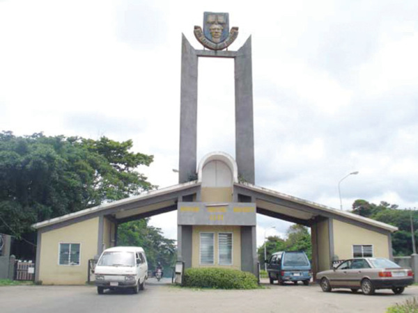
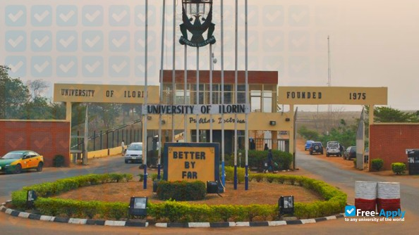

TOP TEN UNIVERSITIES IN NIGERIA
 <
ul>
<
ul>
- University Of Ibadan
ABOUT US:
The University of Ibadan (UI) is the number one best university among the top ten best universities in Nigeria. This is to say that UI is currently the best university in Nigeria.
The National Universities Commission (NUC) listed the University of Ibadan as the best Federal University in the country. It was also featured in the Reuters Top 100 in their latest 2020 rankings of world universities.
UI is an excellent academic institution founded in 1947. It was formerly affiliated with the University of London and ran arts, science, and medicine courses. Because of the school's high standards, it has been rated among the top 10 best universities in Nigeria.
The school, which is fully accredited, offers different academic programmes.
Read More
-
University of Nigeria Nsukka
ABOUT US:
We have the University of Nigeria, Nsukka (UNN) as the second-best university in our top 10 best universities in Nigeria.
UNN, established in 1955, was ranked the second-best university in Nigeria by the NUC.
UNN is the first indigenous/autonomous university that began formally on December 17th, 1960. It has 15 faculties, which are all accredited, and 102 departments.
The university offers education, African studies, developmental studies, and herbal medicine and drugs. They also have centres built to explore space science, climate change and energy research.
The University of Nigeria Nsukka, which is one of the top 10 best universities in Nigeria, has four campuses:
University of Nigeria, Nsukka, UNN in Nsukka
University of Nigeria Enugu Campus, UNEC in Enugu
University of Nigeria Teaching Hospital, UNTH in Ituku-Ozalla
University of Nigeria Aba campus, UNAC in Aba
The school has hosted many regional events, such as the NUGA games and is one university that can boast of an ICT Hub in West Africa.
The school has produced prominent figures in society such as Prof. Doral Akunyili, Godwin Emefiele, Peter Obi, Charles Soludo, Herbert Wigwe, and many others. It also has membership affiliations with associations such as the Association of African Universities (AAU).
Read More

-
University of Lagos
ABOUT US:
University of Lagos (UNILAG) is famous in Nigeria and is among the top 10 best universities in Nigeria. It is the third-best university in Nigeria.
Established in 1962, UNILAG has three campuses in 3 different locations in Lagos. While the main campus is at Akoka, the other two are at Yaba and Surulere, respectively.
UNILAG, which started up with only 131 students, has exploded over the years to become one of the most populated universities in Nigeria. Asides from that, UNILAG is also rated one of the top 10 best universities in Nigeria.
It also boasts of one of the best Distance Learning Institute offering professional courses in Accounting, Business Administration, Science Education, etc.
Read More

-
Obafemi Awolowo University
ABOUT US:
For landmass, Obafemi Awolowo University (OAU) is the largest university in the country, as it covers as much as 11,862 hectares of land. The university was established in 1962 and was formerly known as the University of Ife.
The university is the fourth-best university among the top ten best universities in Nigeria.
According to the international ranking, which is based on the quality of education, Obafemi Awolowo University has been ranked among the top 10 best universities in Nigeria. Hence, it is not surprising to see many university applicants entering the school as their first choice on JAMB application forms.
OAU was among the first academic institutions in Africa to be established in the 1970s. Since its establishment, it has produced top-class graduates who have done well to win many prestigious awards, such as the National Merit Awards.
Obafemi Awolowo University aims to use cutting-edge technology to provide teaching, research, and community services to its students and the nation at large.
Read More

-
Covenant University
ABOUT US:
So far, Covenant University has consistently been rated among the top 10 best universities in the country, and so far, it is regarded as the best private university in the nation.
It is rated the fifth-best university in our list of top universities in Nigeria.
Indeed, Covenant University's tuition and miscellaneous fees are expensive. Still, the costs are being channelled into making the best out of the students.
The university is classified as one of Africa's world-leading Christian mission universities.
The founder of Covenant University, Dr David Oyedepo, is one of Nigeria's most respected spiritual figures and the Bishop and General Overseer of the Living Faith Church a.ka. Winners Chapel.
The institution started full operation in June 2002 after receiving license approval from the Federal Government to operate as an independent private entity.
Being one of the top 10 best universities in Nigeria, Covenant University was established on the core values of Spirituality, Capacity Building, Positive Mentality, Integrity, Diligence, and Sacrifice.
Read More
-
Ahmadu Bello University, Zaria
ABOUT US:
The Northern part of Nigeria is not left out in this academic quest. Ahmadu Bello University has always emerged to represent this region as one of Nigeria's top 10 best universities.
ABU was established in 1962 after the Asby Commission suggested a higher learning institution be established in Northern Nigeria. The university was named after Sir Ahmadu Bello, the then Premier of Northern Nigeria.
The school has two campuses and 15 approved faculties. It also has over 1,400 academic and research staff, with another 6,000 non-teaching and administrative staff.
Reports also show that ABU pioneered the Abubakar Tafawa Balewa College (now the Abubakar Tafawa Balewa University of Technology) and the Abdullahi Bayero College (now Bayero University), Kano.
Read More

-
Federal University of Technology Minna
ABOUT US:
Futminna, Minna makes it to the 7th position in NUC's recent ranking list of the top 10 best universities in Nigeria. It was established in 1983 to promote academic excellence.
The university occupies as much as 10,650 hectares of land and is in Minna, the capital city of Niger State. Besides being one of the top 10 best universities in Nigeria, in terms of size, it is also among the country's largest universities.
Read More

-
University of Ilorin
ABOUT US:
This list of the top 10 best universities in Nigeria won't be complete without including the University of Ilorin (UNILORIN).
UNILORIN is a famous NUC-accredited university. UNILORIN, which was once ranked the best academic high institution in the country, is today ranked the 8th best university in Nigeria according to NUC standards.
The University of Ilorin was the first Nigerian university to be ranked among the top 20 African Universities in 2014.
JAMB once reported that the school had the highest number of applicants in the nation. With 15 accredited faculties, colleges, and postgraduate schools, the university offers various academic programs in multiple fields.
Read More
University of Benin
ABOUT US:
The University of Benin is one of the top 10 best schools in Nigeria and offers quality education.
One of the school's achievements has always been known as the first school to appoint a female Vice-Chancellor in the country, Dr Grace Alele-Williams.
University of Benin today comprises many applicants and students, both full-time and part-time.
The prestigious institution has formed collaborations with many world-class universities and international and local bodies such as FORD Foundation, USAID and United Negro College Fund (UNCF)..
Read More
 University of Abuja
University of Abuja
ABOUT US:
The University of Abuja was established in 1990 and is rated among the top 10 best universities in the country. Since its establishment, it has produced prominent figures who have made the nation proud.
With over 800 hectares of land, the University of Abuja is among the largest in the country.
You will find within the walls of the university campus:
Faculty of Education
Faculty of Law
Faculty of Social Sciences
Faculty of Management Sciences
Science Laboratories
School of Remedial Studies
Institute of Education
Senate Chamber
The University of Abuja also has a well-equipped Medical Centre with cutting-edge facilities. Its medical school is also one of the best in the country.
Read More
Continue Reading